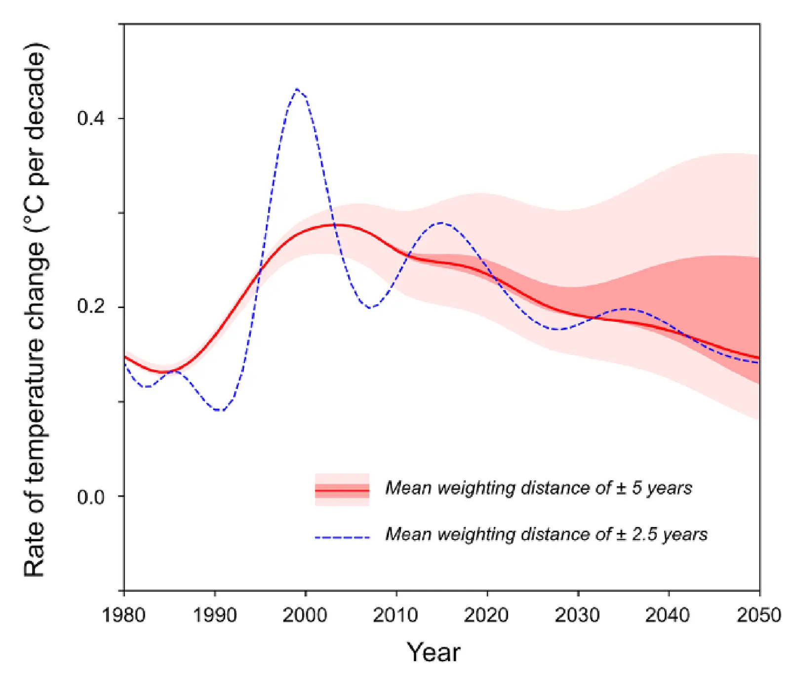

Rate of global warming projected to decline under current policy
Key finding. Applying temporal smoothing to emission and temperature projections for policies now in place, the central estimate of the rate of global warming declines from about 0.21 °C per decade around 2025 to about 0.15 °C per decade around 2050 — a falling rate that nevertheless stays above zero, so the Earth keeps getting warmer.

What question did this research address?
2023 was the hottest year on record, which prompted a widely aired question: is the rate of global warming itself accelerating? The question matters separately from how much warming there will be in total, because the speed of change governs how much time ecosystems and societies have to adapt.
Warming is approximately proportional to cumulative carbon dioxide emissions, so the *rate* of warming is approximately proportional to the *rate* of emissions. Several analyses put the world at or near peak anthropogenic emissions under current policy. This Viewpoint asked what that implies for the rate of warming over the coming decades.
What did we find?
The central projection uses current-policy emission scenarios with no credit taken for nationally determined contributions or long-term net-zero targets. Year-to-year temperature differences are smoothed with a 33-year Hanning window, comparable to a 20-year boxcar average, to separate the trend from interannual noise.
On that basis the rate falls from roughly 0.21 °C per decade around 2025 to roughly 0.15 °C per decade around 2050. Meeting nationally determined contributions and net-zero commitments would make the decline steeper still.
Several things could reverse the trend: failure to meet current commitments, a rapid reduction in sulfate aerosol emissions, larger-than-anticipated internal variability, or unexpected non-linear climate feedbacks.
Recent warming may be amplified by falling aerosol emissions — industrial and power-sector sulfur, especially in China, and the 2020 cut to sulfur in maritime fuel. If aerosols were masking more warming than believed, and if their effect on marine cloud cover is underrepresented in models, climate sensitivity could be higher than generally recognized.
Internal variability cuts both ways. The El Niño Southern Oscillation obscured trends during the early-century warming "hiatus" and is thought to have contributed to the recent unusually large temperature increases.
A declining rate of warming does not imply declining harm. Climate damage may respond non-linearly to the amount of climate change, so damages can accelerate even while the rate of warming falls.
Why does it matter?
It separates two questions that recent record years have tangled together. Whether any given year is the hottest on record is a question about variability around a trend; whether warming is accelerating is a question about the trend itself, and the answer under current policy is that it is not.
The result is a statement about emissions as much as about temperature. Because warming tracks cumulative emissions, a peak in emissions shows up as a peak in the rate of warming — which makes the rate of warming a fairly direct readout of whether mitigation policy is biting.
It is not grounds for comfort. The rate stays positive, so temperatures keep rising, and the non-linearity of damages means the harm can grow faster than the temperature does. The authors' own conclusion points at the need for low-cost carbon-free energy that lets economies grow without pushing emissions back up later this century.
Citation
Lei Duan and Ken Caldeira (2024). Rate of global warming projected to decline under current policy. Environmental Research Letters 19, 092001.
Related
- How long does a carbon dioxide emission go on warming the planet?
- Stabilizing climate requires near-zero emissions (Matthews and Caldeira, 2008)
- Insensitivity of global warming potentials to carbon dioxide emission scenarios (Caldeira and Kasting, 1993)
- Break-even year — a concept for understanding intergenerational trade-offs in climate change mitigation policy (Brown et al., 2020)